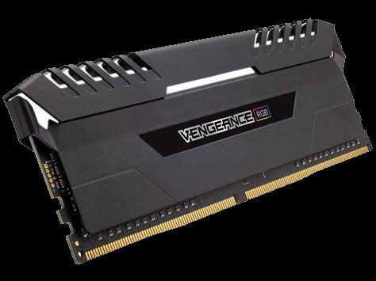

Geforce 3080

Die GeForce RTX 3080 liefert mithilfe von Ampere, der RTX-Architektur der 2. Generation von NVIDIA, die von Gamern langersehnte Superleistung. Sie ist mit verbesserten RT- und Tensor-Recheneinheiten, neuen Streaming-Multiprozessoren und einem superschnellen G6X-Speicher für ein überwältigendes Gaming-Erlebnis ausgerüstet.
Ryzen 9

Der AMD Ryzen 9 Prozessor ist eine 12-Kern-CPU für den Sockel AM4 mit 3,8 GHz Taktfrequenz und 64 MB L3-Cache. Der AMD Ryzen 9 3900X Prozessor besitzt eine maximale Leistungstaktrate von 4,6 GHz und wird im 7nm FinFET Verfahren gefertigt.
Asus ROG Thor

Das Asus ROG Thor 1200W Platinum ist ein Netzteil für Enthusiasten, die Wert auf eine hochwertige Optik und perfekte Leistung legen. Unser erstes Netzteil ist vollgepackt mit innovativen Ideen, einschließlich Aura-Sync-RGB-Beleuchtung, einem integrierten OLED-Informationspanel, einem staubdichten Wing-Blade-Lüfter und einem großen Kühlkörper, der im Vergleich zu herkömmlichen Designs einen geräuschlosen 0dB-Betrieb bei höherer Leistungsaufnahme ermöglicht. Zusätzlich werden bewährte, langlebige Komponenten, wie z.B. japanische Kondensatoren verwendet, um eine Zertifizierung für 80 PLUS Platin-Effizienz zu erhalten.
Deepcool matrexx 70 3f

DEEP COOL MATREXX 70 3F PC-Gehäuse Case, E-ATX-Unterstützung, One-Touch-Release-Frontblende, einfach zu installierende Seitenblende, Rundum-Staubschutz, reichlich Stauraum Das MATREXX 70 3F ist ein Chassis mit einem neuen Konzept, das speziell für den Anwenderkreis der Heim-PC-Bauer entwickelt wurde. Die Architektur dieses Gehäuses bietet mit ihren zahlreichen baulichen Neuerungen Komfort und vielfältige Einsatzmöglichkeiten beim PC-Bau. Im Lieferumfang enthalten sind 3 CF 120-RGB-Lüfter und 1 RGB-LED-Streifen, mit denen sich grandiose Lichteffekte erzielen lassen. Entdecken Sie mit dem MATREXX 70 3F neue, faszinierende Aspekte des PC-Baus durch Gaming-Atmosphäre.
Intel Optane Memory

Der erweiterte Datenschutz des Intel Optane Memory bei Stromausfall bereitet das SSD auf einen unerwarteten Energieverlust des Systems vor, indem die Menge der über temporäre Puffer weitergeleiteten Daten minimiert wird, und nutzt eine integrierte Kapazität zum Schutz bei Stromausfall, um der SSD-Firmware ausreichende Energie zur Verschiebung von Daten aus dem Übertragungspuffer und anderen Puffern in den NAND bereitzustellen und so System- und Benutzerdaten zu schützen.
Corsair Vengance RGB PRO
Der DDR4-Arbeitsspeicher der CORSAIR VENGEANCE RGB PRO Series erhellt Ihren PC mit beeindruckender dynamischer Multi-Zone-RGB-Beleuchtung und bietet Ihnen gleichzeitig eine unvergleichliche DDR4-Leistung sowie Zuverlässigkeit. Jedes Modul besitzt zehn individuell gesteuerte RGB-LEDs, die dank des kabellosen Designs einfach zu installieren sind. Mit der CORSAIR iCUE-Software übernehmen Sie die Kontrolle und können die Beleuchtung jedes Moduls an Ihr System anpassen oder die Beleuchtung über Light LINK mit ihren gesamten CORSAIR-Produkten synchronisieren. Eine speziell entwickelte Platine ermöglicht höchste Signalqualität für optimale Leistung und Zuverlässigkeit auf neuesten AMD- und Intel-DDR4-Mainboards, während sorgfältig geprüfte Speicherchips für eine ausgezeichnete Übertaktung sorgen.
ASUS ROG Strix B550

Die Mainboards der ROG-Strix-B550-Gaming-Serie bieten eine Ausstattung, die normalerweise in den höherwertigen ROG-Strix-X570-Gaming-Serien zu finden ist, einschließlich der neuesten PCIe®-4.0-Technologie. Mit einer stabilen Stromversorgung und effektiven Kühlung ist das ROG Strix B550-F Gaming optimal gerüstet für die AMD-Ryzen™-CPUs der 3. Generation. Das ROG Strix B550-F Gaming beeindruckt mit einer futuristischen Optik und intuitiver ROG-Software als Startschuss für deinen Traum-PC.